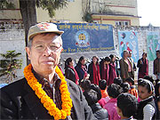
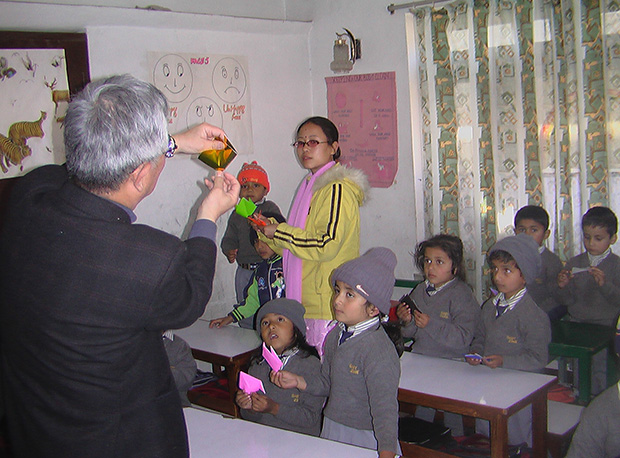
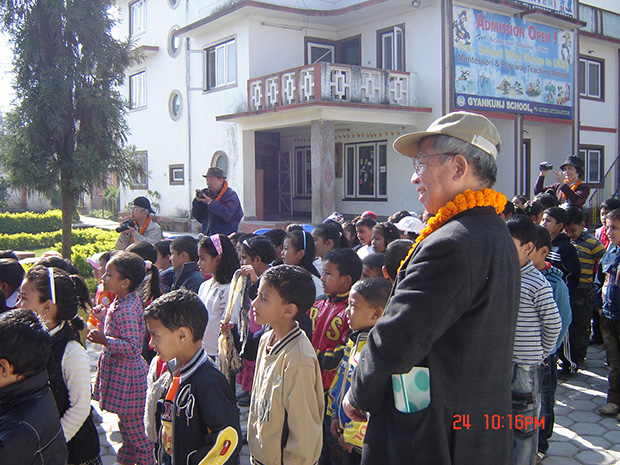
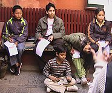
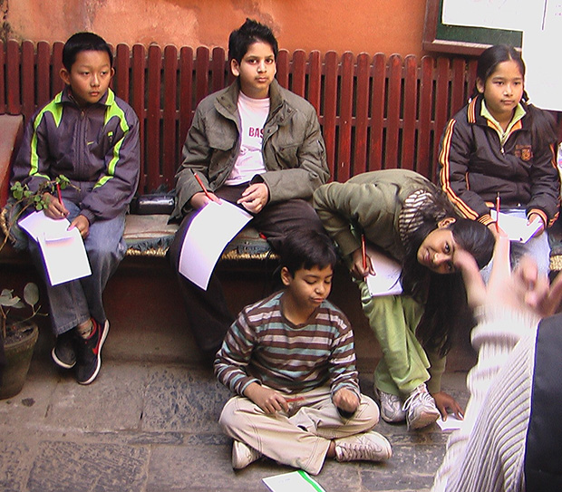
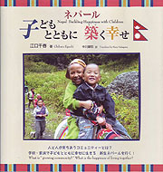

「１５年ほど前にネパールへ行き、もう一度行ってみたいと思っていたネパールのホームステイプログラムだったので参加しました。
出発前に、夜や朝の暖房はなさそうだと分かって、寝袋や、ダウンのジャケットを持参しました。 夕方から朝までは寒くなかったと言えばうそになりますが持っていってよかったと思います。
毎日の長時間の停電には驚きましたが慣れました。 人があふれる街で10ルピーの寿司づめのマイクロバスでの移動もかなりなれました。
英語レッスンですが、あんなに、人間的で、熱心で、親切な先生は知りません。 宿題は、私にしてはまずよくやったと思います。
文法、会話、発音などのレッスンの他に、自主的な活動グループの3人の生徒代表と一緒にレッスンを組んでくれたり、授業を見せてくれたり、私に紹介の場（ショートプレゼンテーション）を与えたり、家に招待してくれたり、生徒たちとのお別れ会をひらき、お土産をいくつもいただいたり、英語の授業で使ったＣＤもいただきました。
ある青年教師とも親しくなりました。これは、メグ先生の思いと私の思いが一致するところがあったんだろうと思います。


ネパールでのホームステイは、ケサブ・ロハニさん一家は、とても親切で暖かく、また気をつかってくれました。だんだん仲良くなって、2人の子どもは、孫みたいな感じでした。
一緒に見たビデオの映画もとてもよかったです。（障害のある子どもが主人公のインド映画 そのメッセージは『みんなそれぞれがスペシャル』みんながドクターになれるわけではない）
ネパールの人育ちについては今後もウオッチングできればと思っています。
パタン、バクタプル、そして市内のスワンブー・パチパスティナートなどを見て、ヒンドゥとブデズムについての興味も高まりました。
バクタプルでは、現地ガイドをしてくれた学生といろんな話をしていい出会いになりました。


現地受入団体は、教師として学校教育に長年携わってきた、各国の教育事情に関心のある私に、全力投球で、「教育を見たい」という希望にこたえてくれました。
今までにないような英語レッスンと４施設のオブザベーションができ、家ぐるみの歓待を受けました。
家庭に何度も招待してくれ奥さん赤ちゃんとも話しランチもご馳走になり土産までいただきました。 そんな経過なのでとても現地の方々に感謝しております。
本を出版しました！

長年、教育者として従事した江口千春さまが 「ネパール 子どもとともに築く幸せ」 という本を出版されました。
ネパールでのホームステイ滞在や、現地の学校を訪問し子供たちとの温かい交流を築かれた様子などがきれいな写真と共に掲載されています。
ふと忘れているぬくもりや素朴さを思い出させてくれ、人との関係性の重要性、「ともに生きる」ことを考えさせてくれる１冊です。